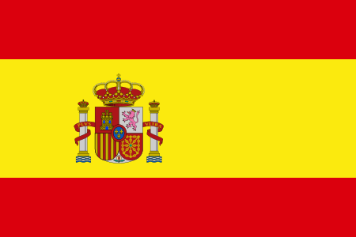

← Languages
🇪🇸
Flash
lingo

✨ Beginner · 500 Words · 24 Categories
Welcome to
Flashlingo!
Flash-card quizzes to build your Spanish vocabulary — ¡buena suerte!
🏆 Personal Best
🌟
Vocabulary Level:
🌱 Beginner
📘 Intermediate
🎓 Expert
Difficulty:
⭐ Easy
🔥 Hard
⭐ Easy Mode
Multiple choice
🔥 Hard Mode
Type the answer
Double points
📚
By Category
Master one topic at a time
Pick any of 20 topics and answer every word within it.
🎯 No lives limit · Up to 6 pts/word
🔥
Endless Mode
Category after category
Complete random categories back-to-back. 3 mistakes and you're out!
❤️ 3 lives · Up to 6 pts/word
⚡
God Mode
One strike. You're out.
Random words from every category. All 500 words. One mistake ends it.
💀 1 life · Up to 10 pts/word
500
Words
24
Categories
2×
Hard pts
← Back
Pick a Category
Complete all words · Faster = more points
⏹ Stop
Category
0 pts
1/20
What is the Spanish translation?
❓
—
5.0s
🎉
Category Complete!
Next up…
Nice work!
Session Score
0
points
🎉
50
words correct!
Keep going!
End Session?
Your progress will not be saved.
Keep Playing
Exit